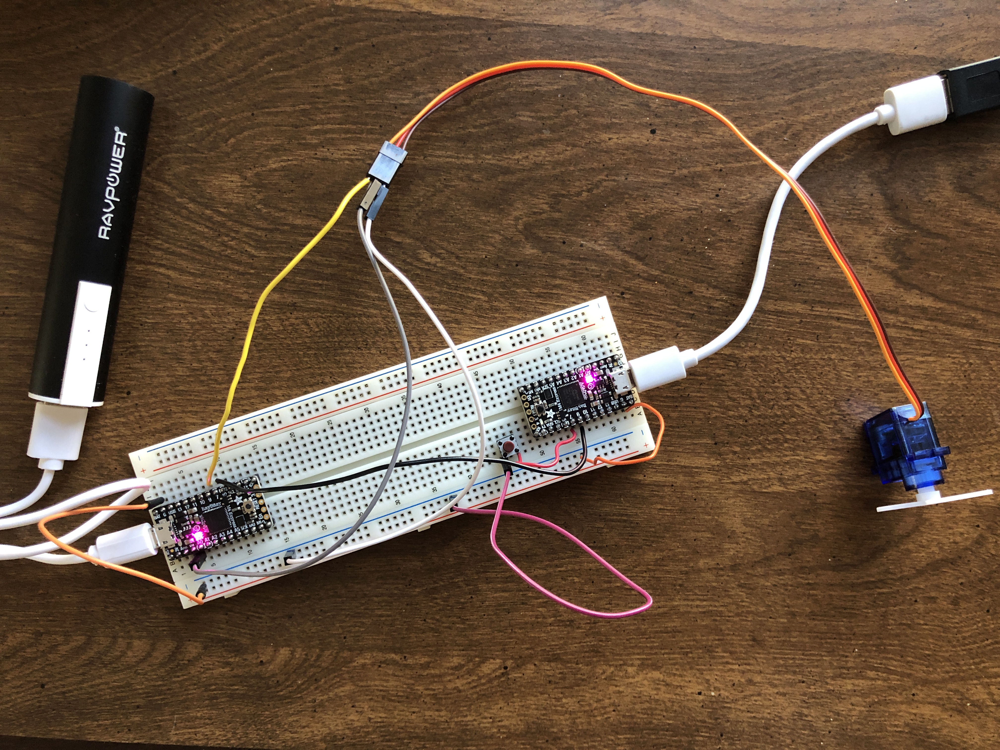

Week 9: Networking Part I
Finding Common Ground
This week, we were tasked with successfully getting two microcontrollers to talk to each other, which could be achieved via wiring or radio. I was fortunate enough to have two functional ItsyBitsy boards, so I used these to complete my project.
I began my process by working through the literature and trying the different tutorials made available by the teaching team. Pictured at the right, I first enabled the turning of a servo motor connected to the receiving board by simply pressing a button, which was wired to the transmitting board. I followed this up by introducing the second tutorial, which uses universal asynchronous receiver-transmitter (UART) to communicate by serial protocol. The transmitter board sends bytes of data via the TX pin to the receiving board on its RX pin, which, in this case, sent a rescaled value from the potentiometer to the myservo.write() function to specify its degree of rotation.
With these up and running, I was inspired to create some sort of combination of the two, which could result in both fine control of the servo, which the potentiometer affords, and the flinging excitement of pressing the button. And what better context in which to celebrate these functions than with... a mini catapult! So, that is what I set out to do.
- Parts List
- Servo Motor with attachments
- Potentiometer
- Male-male solid core wire
- 2 Microcontrollers: I used Adafruit ItsyBitsys
- 2 Micro-USB to USB-A Cables
- 5V Powerbank
- Breadboard
- Tin foil and tape (or whatever you can find)
- Peas! Or other ammo!
Initially, I had some trouble because I was trying to transmit UART data over a connection between digital pins instead of the all-important RX and TX pins (this was before I completed the UART tutorial). However, once I squared this all away and used two ItsyBitsys for consistency, I managed to get my mechanism up and running. Essentially, the logic flow is as follows: the potentiometer sends a value via UART from the transmitting board to the receiving board. This value is rescaled into a "degree" count and stored as a new variable that's put inside the myservo.write() function. Meanwhile, the button's input is read digitally and transmitted through another wired connection between pins 7 and 9 between the boards. When it's pressed, the catapult is flung from the starting degree specified by the potentiometer. Once the catapult has flung the ammo, the fulcrum returns to its resting position. The image to the right is an early form the catapult took, where I created a little nest for the ammo (being none other than Le Seur peas) to sit in. Below is the code I used; my transmitter code is available for download here and my receiver code is available here!
/// TX Code ///
const int out_pin = 9;
const int button_pin = 7;
const int pot_pin = 4;
void setup() {
pinMode(button_pin, INPUT_PULLUP);
pinMode(out_pin, OUTPUT);
Serial.begin(9600);
Serial1.begin(9600);
}
void loop() {
int pot_value = analogRead(pot_pin);
Serial.println(pot_value);
Serial1.write(pot_value/4);
int buttonState = digitalRead(button_pin);
Serial.println(buttonState);
digitalWrite(out_pin, buttonState);
delay(10);
}
/// RX Code ///
Servo myservo;
void setup() {
pinMode(7, INPUT_PULLUP);
myservo.attach(9);
Serial.begin(0);
Serial1.begin(9600);
}
void loop() {
Serial.begin(0);
Serial1.begin(9600);
while(!Serial1.available()) {
// while Serial1 feed isn't available, do nothing
}
byte rec_byte = Serial1.read();
int degree = rec_byte*90/255;
Serial.println(degree);
if (digitalRead(7)) myservo.write(degree);
}
As for the colors, I initially had just left them green, but eventually decided to go for a rainbow aesthetic. Because I opted for this rainbow design, which has 7 colors, I had two functional LEDs left over. I poked around and ended up making those LEDs, when triggered by the capacitor's output, oscillate randomly between many different colors with the following code. Allowing the R, G, and B input to be fully random just results in white light, I found, but this approach leads to more variety.

Once the code was compiled and did what I wanted it to do, I did some fine-tuning to make proper adjustments to the code to capture the capacitor's sensitivity. Then, I decided to have some fun with this set-up and see if I could apply it to a different substrate: my tiny electric guitar. I taped the LED strip to the top of the body and tried various approaches to make the capacitance facet work. My initial attempt was to thread the foil under strings on the frets, but this just made them buzz when I played them. My next (and favorite) angle was to make "groove gloves™" as I've patented them, which was, to put it bluntly, tinfoil taped to my hands.

This would have been truly beautiful if it had worked. But alack, the mere contact with my hand at all led to all the LEDs firing, which couldn't even really be fixed by an insulator like paper due to the imperfection and slapdashery of it all. However, on I pressed, determined to have something to show for my foray into working with the guitar! In my next iteration, I put the foil on the backside of the bridge, where it would come in contact with the strings only lightly and, I hoped, would fire the LEDs when I vibrated or touched the strings. As is visible in the below video, this (sort of) worked! My set-up was very delicate so I had to phone my sister to come turn off the lights for full ambience. In the end, it was very fun to put together, and I hope I can improve (if not perfect) in future weeks. As you'll be quick to ascertain, the real challenge here was playing guitar in the dark.